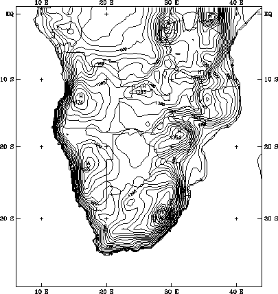

Figure 1 — Possible simulation domain for regional climate of southern Africa, showing political boundaries and contours of surface elevation at 60-km resolution [contour interval = 100 m]. The projection is Mercator with latitude circles and meridians marked by crosses (+). At 60-km resolution, this domain requires 81 x 71 gridpoints.
(Return to white paper on seasonal climate forecasting.)